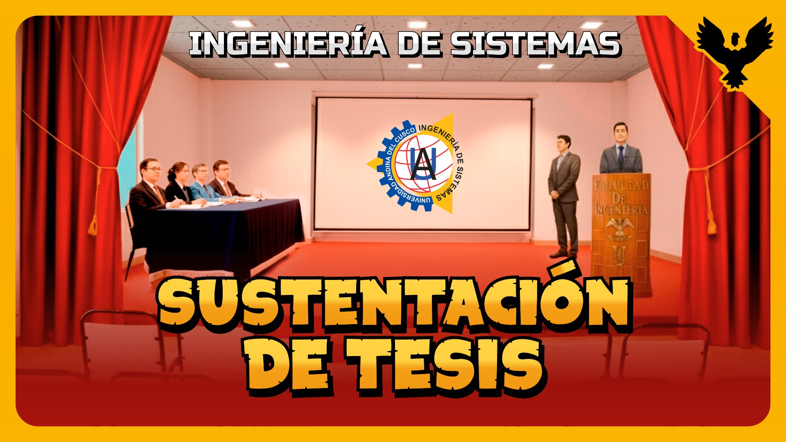
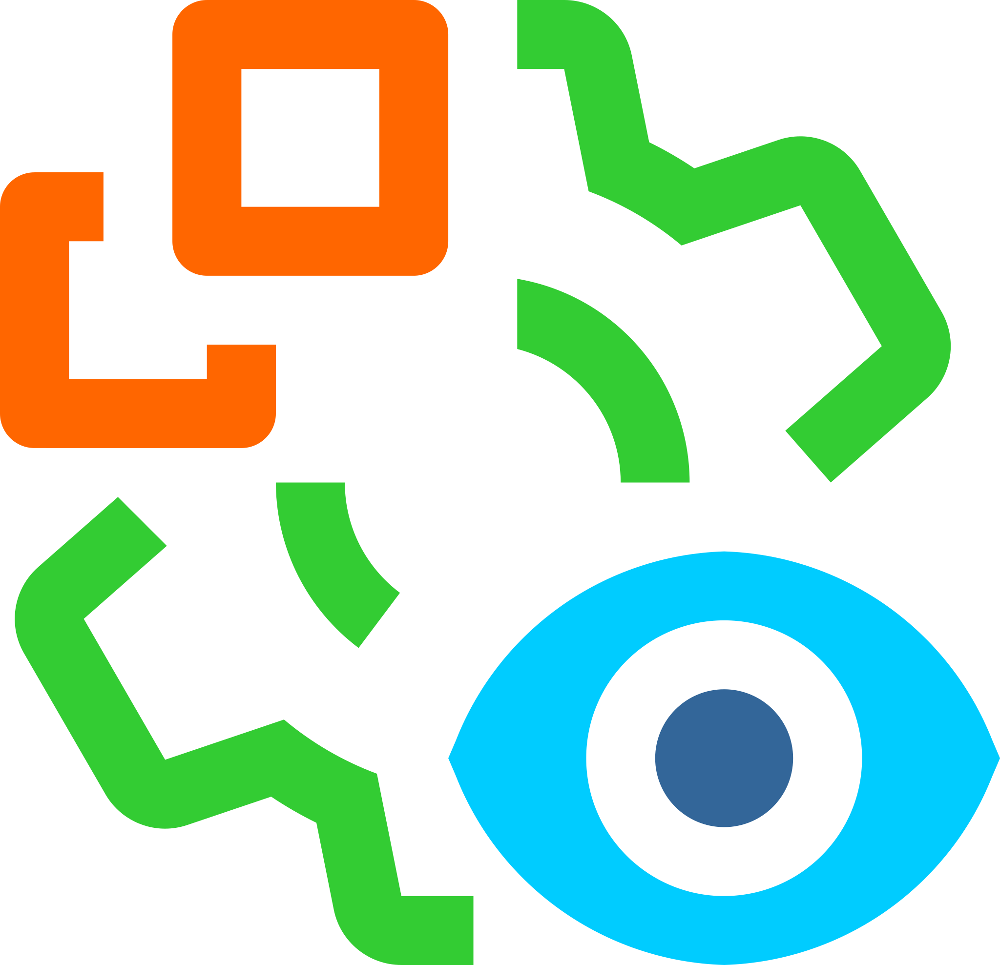
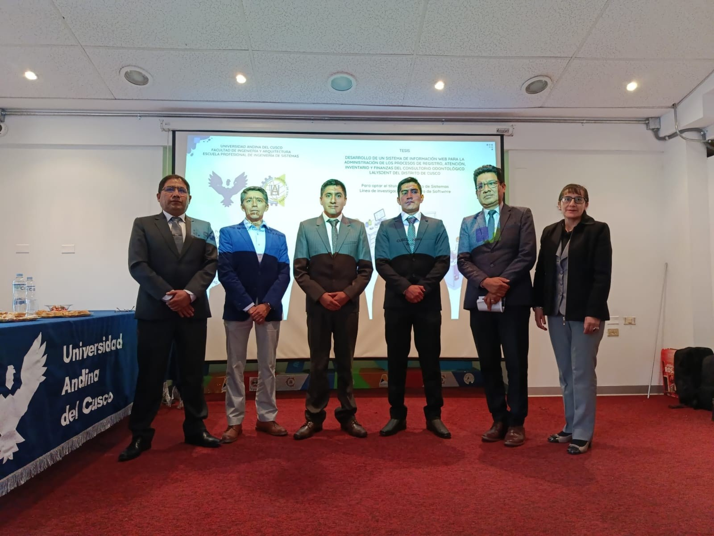
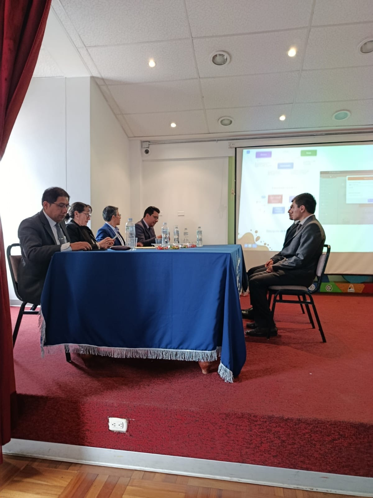
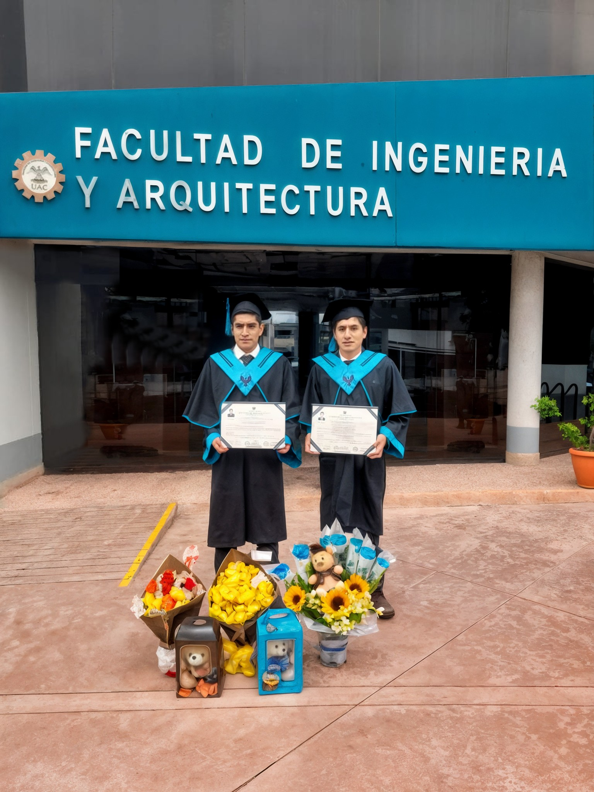

Sustentación de Tesis para la obtención del título profesional de Ingeniero de Sistemas
Universidad Andina del Cusco
Facultad de Ingeniería y Arquitectura
Calvo Arteaga & Cobos Vargas
Calvo Arteaga & Cobos Vargas

Sistemas de Información Odontológico, mostrando el alcance y población objetivo de la investigación.
Tecnologías de Información aplicadas a la gestión de procesos odontológicos y desarrollo de software.
Desarrollo de Software enfocado en sistemas de gestión odontológica y optimización de procesos.
Registro, atención, inventario y pagos, principales áreas de estudio dentro de la investigación.
En el desarrollo del presente sistema se utilizó la metodología ágil Scrum, que permitió una gestión iterativa e incremental del sistema de información, favoreciendo la organización del trabajo en equipo y la entrega continua de avances. La arquitectura adoptada fue Modelo Vista Controlador (MVC), facilitando la separación de responsabilidades y el mantenimiento del código. Como framework principal se empleó Laravel, reconocido por su robustez, seguridad y eficiencia en el desarrollo de aplicaciones web. Para el diseño de la interfaz de usuario se utilizó Tailwind CSS, lo que permitió construir una interfaz moderna, responsiva y altamente personalizable, mejorando la experiencia del usuario final.
Metodología ágil de desarrollo para sistemas de información iterativos e incrementales.

Arquitectura que separa lógica, interfaz y control para mayor orden y mantenimiento.
Framework backend confiable y seguro para construir aplicaciones web robustas.
Framework frontend para crear interfaces modernas, responsivas y consistentes.
Repositorio:
www.calvocobos.github.io/ExpoAsesor de Tesis
ORCID: 0000-0003-4078-4121UAC: 016200186D
ORCID: 0009-0005-1426-4415UAC: 016200330H
ORCID: 0009-0001-2767-3462
La sustentación del Sistema de Información Odontológico se llevó a cabo el 23 de septiembre de 2025 en la Universidad Andina del Cusco, ante el jurado evaluador y el asesor de tesis. En el evento, los autores presentaron de manera integral la propuesta, desarrollo e implementación del sistema web, diseñado para optimizar los procesos de registro, atención, inventario y pagos dentro de consultorios odontológicos.
La exposición abordó tanto los aspectos academicos como metodológicos de la tesis. El sistema fue desarrollado siguiendo la metodología ágil SCRUM, ejecutándose en cinco sprints que permitieron gestionar de manera iterativa las etapas de planificación, desarrollo, pruebas y retroalimentación continua. Este enfoque fomentó la colaboración efectiva entre los integrantes del equipo y aseguró la entrega de avances funcionales en cada iteración.
En cuanto a la arquitectura, se aplicó el patrón Modelo-Vista-Controlador (MVC), lo cual facilitó la organización del código, el mantenimiento del sistema y la separación de responsabilidades. El desarrollo se llevó a cabo con el framework Laravel 11, mientras que para el diseño de la interfaz de usuario se empleó Tailwind CSS, logrando una plataforma moderna, accesible y adaptable a distintos dispositivos. Todo este trabajo fue presentado durante la sustentación, evidenciando el cumplimiento de los objetivos planteados y la calidad técnica del sistema de información.
Presidente del Jurado
ORCID: 0000-0002-7170-8837Secretaria de Actas
ORCID: 0000-0001-7479-3152Miembro del Jurado
ORCID: 0000-0001-5915-4096
Durante la etapa de evaluación de la sustentación, el jurado calificador formuló preguntas orientadas a la comprensión profunda de la documentación técnica y la implementación funcional del Sistema de Información Odontológico. Esta fase permitió a los autores demostrar su dominio conceptual, metodológico y práctico sobre cada uno de los componentes del sistema de información.
Las consultas abordaron tanto aspectos de análisis y diseño del sistema incluyendo diagramas, requerimientos funcionales y estructura de base de datos como elementos del proceso de desarrollo basado en la metodología ágil SCRUM. Los sustentantes explicaron la gestión realizada a lo largo de los cinco sprints, justificando las decisiones técnicas adoptadas durante la planificación, codificación y pruebas.
Asimismo, se discutieron temas relacionados con la arquitectura Modelo Vista Controlador (MVC), la seguridad de la información y la experiencia de usuario. El jurado destacó la correcta aplicación de Laravel 11 como framework backend y Tailwind CSS para la interfaz, resaltando la calidad, escalabilidad y accesibilidad del sistema web. Esta evaluación consolidó la relevancia académica y técnica del sistema de información, confirmando su contribución al ámbito de los sistemas de información odontológicos.
Este trabajo académico comprende las tres etapas principales del proceso de titulación en la Universidad Andina del Cusco: la inscripción y aprobación del proyecto de tesis, la sustentación y registro en acta, y el otorgamiento de los títulos profesionales. Los documentos listados a continuación son oficiales y publicados por la universidad en sus secciones de transparencia institucional, respetando siempre la protección de datos personales.
El proyecto de tesis fue inscrito oficialmente en marzo de 2025, conteniente la propuesta de investigación desarrollada por ambos bachilleres bajo la asesoría correspondiente.
Resolución de Inscripción: 941-2025-DFIA-UAC
Documento oficial: IS-proy-tesis-fia-2025.pdf
El acta de sesión institucional documenta la aprobación de los títulos profesionales luego de la sustentación de la tesis por parte de los estudiantes en sesión extraordinaria del 18 de noviembre de 2025.
Documento oficial:
Tras la aprobación institucional, el Consejo Universitario emitió las resoluciones que confieren el Título Profesional de Ingeniero de Sistemas a ambos bachilleres, acto que formaliza legalmente el proceso.
Universidad Andina del Cusco
Contiene la versión oficial del trabajo de investigación y documentación completa de la tesis sustentada.
Registro Nacional de Trabajos de Investigación
Registro oficial administrado por la SUNEDU que garantiza la visibilidad, autenticidad y preservación académica de las tesis a nivel nacional.
Identificador de la tesis
El DOI (Digital Object Identifier) es un identificador digital permanente que permite localizar y citar de forma única y estable.
Open Science Framework
Plataforma de ciencia abierta que centraliza y difunde proyectos de investigación, mejorando su visibilidad, acceso y preservación académica.
Recolección de la tesis
Infraestructura académica europea de acceso abierto que recolecta y difunde publicaciones científicas desde repositorios confiables, aumentando su visibilidad e impacto internacional.
Desarrollo del sistema
Repositorio del código fuente del sistema de información odontológico, desarrollado con Laravel y Tailwind CSS.
Salud y bienestar
Este sistema de información contribuye al ODS 3 al fortalecer la gestión y calidad de la atención en servicios odontológicos.
Industria, innovación e infraestructura
Promueve la innovación tecnológica en la salud mediante un sistema de información web eficiente y escalable.
Modelo de calidad de software
El sistema fue evaluado considerando los atributos de calidad definidos por la norma ISO/IEC 25010.
Normas de documentación
Las referencias y citas bibliográficas de la tesis fueron elaboradas conforme a las normas APA Séptima Edición.
A continuación se presentan las Referencias digitales más importantes de la tesis, incluyendo repositorios, DOI, PDF y material de presentación.
| Recurso | Enlace |
|---|---|
| Repositorio Universidad Andina del Cusco - UAC | https://hdl.handle.net/20.500.12557/8558 |
| Registro Nacional (SUNEDU - RENATI) | https://renati.sunedu.gob.pe/handle/renati/4844187 |
| DOI (versión de registro - Zenodo) | https://doi.org/10.5281/zenodo.18047949 |
| Proyecto OSF | https://osf.io/rqzdx/ |
| PDF tesis en OSF | https://osf.io/rqzdx/files/qmzbp |
| Página de la Tesis | https://calvocobos.github.io/Expo/ |
| PDF de la tesis (GitHub Pages) | https://calvocobos.github.io/Expo/Carlos_Irvin_Tesis_bachiller_2025.pdf |
| Video de presentación | https://www.youtube.com/watch?v=GAQ6pLZKUeU |
| Repositorio GitHub | https://github.com/calvocobos/Expo |
Nota:
El archivo PDF disponible en OSF y en GitHub Pages corresponde a la versión final de la tesis, idéntica a la depositada en el repositorio Universitario UAC y en SUNEDU - RENATI.
El Registro Nacional de Trabajos de Investigación (RENATI) es la plataforma oficial administrada por la Superintendencia Nacional de Educación Superior Universitaria (SUNEDU), encargada de consolidar y difundir los trabajos conducentes a grados y títulos otorgados por las universidades del Perú.
La inclusión de esta tesis en RENATI garantiza su reconocimiento a nivel nacional, validando su existencia, autoría, institución otorgante y grado académico, constituyéndose como el respaldo institucional y legal del trabajo ante el Estado peruano.
El registro en RENATI enlaza directamente con el repositorio institucional universitario, asegurando la trazabilidad, preservación y verificación del trabajo académico.
Fuente: Superintendencia Nacional de Educación Superior Universitaria (SUNEDU). Registro Nacional de Trabajos de Investigación (RENATI).
Ver registro oficial en RENATIA continuación, se presenta la metadata académica correspondiente a la tesis, estructurada según el estándar Dublin Core y los lineamientos del repositorio institucional.
| Campo de metadata | Valor |
|---|---|
| dc.contributor.advisor | Espetia Huamanga, Hugo |
| dc.contributor.author | Calvo Arteaga, Carlos Antonio |
| dc.contributor.author | Cobos Vargas, Irvin Julian |
| dc.date.accessioned | 2025-12-18T21:07:20Z |
| dc.date.available | 2025-12-18T21:07:20Z |
| dc.date.issued | 2025-09-23 |
| dc.description.lineadeinvestigacion | Desarrollo de Software |
| dc.format | application/pdf |
| dc.identifier.uri | https://hdl.handle.net/20.500.12557/8558 |
| dc.identifier.doi | 10.5281/zenodo.18047949 |
| dc.language.iso | spa |
| dc.publisher | Universidad Andina del Cusco |
| dc.publisher.country | PE |
| dc.rights | info:eu-repo/semantics/openAccess |
| dc.rights.uri | https://creativecommons.org/licenses/by-nc-nd/4.0/ |
| dc.subject | Aplicaciones informáticas en salud |
| dc.subject | Gestión administrativa |
| dc.subject | Automatización de procesos |
| dc.subject | Manejo de datos |
| dc.subject.ocde | https://purl.org/pe-repo/ocde/ford#2.02.04 |
| dc.title | Desarrollo de un sistema de información web para la administración de los procesos de registro, atención, inventario y finanzas del consultorio odontológico Lalysdent del distrito de Cusco |
| dc.type | info:eu-repo/semantics/bachelorThesis |
| renati.advisor.dni | 23983332 |
| renati.advisor.orcid | https://orcid.org/0000-0003-4078-4121 |
| renati.author.dni | 71848338 |
| renati.author.orcid | https://orcid.org/0009-0005-1426-4415 |
| renati.author.dni | 45138898 |
| renati.author.orcid | https://orcid.org/0009-0001-2767-3462 |
| renati.discipline | 612076 |
| renati.juror | Chavez Espinoza, William Alberto |
| renati.juror.orcid | https://orcid.org/0000-0002-7170-8837 |
| renati.juror | Bernales Guzman, Yessenia |
| renati.juror.orcid | https://orcid.org/0000-0001-7479-3152 |
| renati.juror | Monzon Condori, Luis Alvaro |
| renati.juror.orcid | https://orcid.org/0000-0001-5915-4096 |
| thesis.degree.discipline | Ingeniería de Sistemas |
| renati.type | https://purl.org/pe-repo/renati/type#tesis |
| thesis.degree.grantor | Universidad Andina del Cusco. Facultad de Ingeniería y Arquitectura |
| thesis.degree.name | Ingeniero de Sistemas |
| renati.level | https://purl.org/pe-repo/renati/level#tituloProfesional |
| renati.management | Privada asociativa |
| renati.identifier.siu | 039 |
| renati.identifier.name | Universidad Andina del Cusco |
| dc.relation.ispartof | Ingeniería de Sistemas - Facultad de Ingeniería y Arquitectura |
| dc.subject | Plataformas digitales |
| dc.coverage.spatial | Cusco, Perú |
A continuación, se presenta el resumen de la tesis en cuatro idiomas con la finalidad de ampliar su accesibilidad, visibilidad académica e impacto internacional.
dc.description.abstract
La presente tesis tiene como objetivo principal el desarrollo de un sistema de información web para la administración de los procesos de registro, atención, inventario y finanzas del consultorio odontológico LALYSDENT de la ciudad del Cusco. El estudio inicia con la identificación de los procesos del consultorio y la recolección de requerimientos de los especialistas odontólogos, los cuales son obtenidos a través de historias de usuario. Para desarrollar la solución requerida, se utilizó la metodología ágil Scrum y la arquitectura MVC, lo que permitió una construcción iterativa y colaborativa del sistema de información web, el cual incluye módulos para el registro de pacientes, gestión de citas e historias clínicas junto a su odontograma correspondiente, administración de tratamientos, control de suministros e inventario odontológico, administración de pagos realizados por los pacientes y reportes consolidados de atención que reflejan adecuadamente los datos ingresados. La implementación se realizó con tecnologías modernas como el Framework Laravel en su versión 11, Jetstream, Livewire, Tailwind CSS, JQuery y MySQL, lo que garantizó una interfaz dinámica, diseño responsivo y un sistema robusto, confiable y escalable. Como resultado final se logra absolver el problema identificado y los resultados obtenidos evidencian una mejora significativa en la atención brindada en el consultorio, una mayor eficiencia en los tiempos desempeñados en cada proceso y una reducción de errores en el manejo del inventario y finanzas. Logrando alcanzar gran parte de los criterios de la norma ISO/IEC 25010. El sistema de información web desarrollado no solo contribuye a la digitalización de los procesos administrativos, sino también representa un apoyo fundamental para la toma de decisiones estratégicas, asegurando la sostenibilidad y crecimiento del consultorio odontológico.
dc.description.abstract[en]
The present thesis has as its main objective the development of a web-based information system for the administration of the registration, care, inventory and financial processes of the LALYSDENT dental office in the city of Cusco. The study begins with the identification of office processes and the collection of requirements from dental specialists, which are obtained through user stories. To develop the required solution, the agile Scrum methodology and the MVC architecture were used, which allowed an iterative and collaborative construction of the web information system, which includes modules for patient registration, appointment management and medical records with the respective odontogram, treatment management, dental supplies and inventory control, patient payment management and consolidated care reports that accurately reflect the data entered. The implementation was done with modern technologies such as Laravel Framework version 11, Jetstream, Livewire, Tailwind CSS, JQuery and MySQL, which ensured a dynamic interface, responsive design, and a robust, reliable, and scalable system. The end result is that the identified problem has been solved, and the results obtained show a significant improvement in the care provided in the dental office, greater efficiency in the time taken in each process and a reduction of errors in inventory and financial management. Most of the criteria of the ISO/IEC 25010 standard have been met. The web-based information system developed not only contributes to the digitization of administrative processes, but also provides fundamental support for strategic decision-making, ensuring the sustainability and growth of the dental practice.
dc.description.abstract[pr]
O principal objetivo desta tese é o desenvolvimento de um sistema de informação baseado na web para gerenciar os processos de cadastro, atendimento ao paciente, estoque e finanças da clínica odontológica LALYSDENT, na cidade de Cusco. O estudo inicia-se com a identificação dos processos da clínica e a coleta de requisitos junto aos especialistas em odontologia por meio de histórias de usuário. Para o desenvolvimento da solução proposta, foram utilizadas a metodologia ágil Scrum e a arquitetura MVC, possibilitando uma construção iterativa e colaborativa do sistema de informação baseado na web. Este sistema inclui módulos para cadastro de pacientes, agendamento de consultas e prontuários médicos com seus respectivos odontogramas; gestão de tratamentos; controle de materiais odontológicos e estoque; gestão de pagamentos de pacientes; e relatórios consolidados de atendimento ao paciente que refletem com precisão os dados inseridos. A implementação foi realizada utilizando tecnologias modernas como o framework Laravel versão 11, Jetstream, Livewire, Tailwind CSS, jQuery e MySQL, garantindo uma interface dinâmica, design responsivo e um sistema robusto, confiável e escalável. Como resultado final, o problema identificado foi resolvido e os resultados obtidos demonstram uma melhoria significativa no atendimento prestado no consultório odontológico, maior eficiência no tempo gasto em cada processo e redução de erros na gestão de estoque e financeira. Isso permitiu que o consultório atendesse à maioria dos critérios da norma ISO/IEC 25010. O sistema de informação baseado na web desenvolvido não só contribui para a digitalização dos processos administrativos, como também fornece suporte fundamental para a tomada de decisões estratégicas, garantindo a sustentabilidade e o crescimento do consultório odontológico.
dc.description.abstract[fr]
L'objectif principal de cette thèse est le développement d'un système d'information web pour la gestion des inscriptions, des soins aux patients, des stocks et des finances de la clinique dentaire LALYSDENT à Cusco. L'étude débute par l'identification des processus de la clinique et le recueil des besoins auprès des spécialistes dentaires à travers des récits utilisateurs. Pour développer la solution requise, la méthodologie agile Scrum et l'architecture MVC ont été utilisées, permettant une construction itérative et collaborative du système d'information web. Ce système comprend des modules pour l'inscription des patients, la gestion des rendez-vous et les dossiers médicaux avec leurs odontogrammes correspondants ; la gestion des traitements ; le contrôle des fournitures dentaires et des stocks ; la gestion des paiements des patients ; et des rapports de soins consolidés reflétant fidèlement les données saisies. La mise en œuvre a été réalisée à l'aide de technologies modernes telles que le framework Laravel version 11, Jetstream, Livewire, Tailwind CSS, jQuery et MySQL, garantissant une interface dynamique, un design adaptatif et un système robuste, fiable et évolutif. En définitive, le problème identifié a été résolu et les résultats obtenus témoignent d'une amélioration significative des soins prodigués au cabinet dentaire, d'une plus grande efficacité dans la gestion du temps consacré à chaque processus et d'une réduction des erreurs de gestion des stocks et des finances. Ceci a permis au cabinet de satisfaire à la plupart des critères de la norme ISO/IEC 25010. Le système d'information en ligne développé contribue non seulement à la numérisation des processus administratifs, mais apporte également un soutien essentiel à la prise de décisions stratégiques, garantissant ainsi la pérennité et le développement du cabinet dentaire.

La presente tesis se encuentra protegida bajo la licencia Creative Commons Atribución-No Comercial-Sin Derivadas 4.0 Internacional (CC BY-NC-ND 4.0), con el propósito de promover la difusión del conocimiento académico, garantizando al mismo tiempo el respeto a la autoría intelectual y la integridad del contenido original.
Esta licencia ha sido seleccionada debido a que permite el acceso libre y gratuito a la tesis para fines académicos y de investigación, asegurando que el trabajo pueda ser compartido sin fines comerciales y sin modificaciones que alteren su contenido, conclusiones o estructura original.
Bajo esta licencia, la tesis puede ser compartida y distribuida en su forma original para fines educativos y académicos, siempre que se otorgue el crédito correspondiente a los autores. Sin embargo, queda estrictamente prohibido su uso comercial, así como la modificación total o parcial del contenido sin autorización expresa de los autores.
Creative Commons. (s. f.). Attribution-NonCommercial-NoDerivatives 4.0 International (CC BY-NC-ND 4.0). https://creativecommons.org/licenses/by-nc-nd/4.0/
Calvo, C., Cobos, I. (2025). Desarrollo de un sistema de información web para la administración de los procesos de registro, atención, inventario y finanzas del consultorio odontológico Lalysdent del distrito de Cusco [https://purl.org/pe-repo/renati/type#tesis, Universidad Andina del Cusco]. https://hdl.handle.net/20.500.12557/8558
Calvo, C., Cobos, I. Desarrollo de un sistema de información web para la administración de los procesos de registro, atención, inventario y finanzas del consultorio odontológico Lalysdent del distrito de Cusco [https://purl.org/pe-repo/renati/type#tesis]. PE: Universidad Andina del Cusco; 2025. https://hdl.handle.net/20.500.12557/8558
Calvo, C.A. & Cobos, I.J., 2025. Desarrollo de un sistema de información web para la administración de los procesos de registro, atención, inventario y finanzas del consultorio odontológico Lalysdent del distrito de Cusco. Universidad Andina del Cusco. Disponible en: https://hdl.handle.net/20.500.12557/8558 [Acceso: ].
CALVO, C.; COBOS, I. Desarrollo de un sistema de información web para la administración de los procesos de registro, atención, inventario y finanzas del consultorio odontológico Lalysdent del distrito de Cusco. Universidad Andina del Cusco, Perú, 2025. https://hdl.handle.net/20.500.12557/8558
Calvo, Carlos Antonio, y Irvin Julian Cobos. Desarrollo de un sistema de información web para la administración de los procesos de registro, atención, inventario y finanzas del consultorio odontológico Lalysdent del distrito de Cusco. Universidad Andina del Cusco, 2025. https://hdl.handle.net/20.500.12557/8558
Calvo, Carlos Antonio, y Irvin Julian Cobos. 2025. "Desarrollo de un sistema de información web para la administración de los procesos de registro, atención, inventario y finanzas del consultorio odontológico Lalysdent del distrito de Cusco." Universidad Andina del Cusco. https://hdl.handle.net/20.500.12557/8558
TY - THES AU - Calvo, Carlos Antonio AU - Cobos, Irvin Julian TI - Desarrollo de un sistema de información web para la administración de los procesos de registro, atención, inventario y finanzas del consultorio odontológico Lalysdent del distrito de Cusco PB - Universidad Andina del Cusco PY - 2025 UR - https://hdl.handle.net/20.500.12557/8558 ER -
@misc{20.500.12557/8558,
author = "Calvo Arteaga, Carlos Antonio and Cobos Vargas, Irvin Julian",
title = "Desarrollo de un sistema de información web para la administración de los procesos de registro, atención, inventario y finanzas del consultorio odontológico Lalysdent del distrito de Cusco",
publisher = "Universidad Andina del Cusco",
year = "2025"
}
RT - Thesis AU - Calvo, Carlos Antonio AU - Cobos, Irvin Julian TI - Desarrollo de un sistema de información web para la administración de los procesos de registro, atención, inventario y finanzas del consultorio odontológico Lalysdent del distrito de Cusco PB - Universidad Andina del Cusco YR - 2025 UR - https://hdl.handle.net/20.500.12557/8558 ER -
A continuación, se presenta la metadata académica de la tesis publicada en Zenodo, estructurada bajo el esquema DataCite y mapeable al estándar Dublin Core.
| datacite:identifier (DOI) | https://doi.org/10.5281/zenodo.18047949 |
| datacite:title | Desarrollo de un sistema de información web para la administración de los procesos de registro, atención, inventario y finanzas del consultorio odontológico Lalysdent del distrito de Cusco. |
| datacite:creator | Cobos Vargas, Irvin Julian (ORCID: 0009-0005-1426-4415) |
| datacite:creator | Calvo Arteaga, Carlos Antonio (ORCID: 0009-0001-2767-3462) |
| datacite:publisher | Zenodo (CERN) |
| datacite:publicationYear | 2025 |
| datacite:resourceType | Thesis |
| datacite:rights | Creative Commons BY-NC-ND 4.0 |
| datacite:relatedIdentifier | Repositorio institucional UAC |
A continuación, se presentan los indicadores cuantitativos de impacto obtenidos a partir de los registros de acceso y descarga del documento académico en los repositorios institucionales y plataformas de acceso abierto.
149
Accesos registrados en el repositorio institucional
37
Descargas completas del documento
111
Visualizaciones en plataforma internacional
82
Descargas acumuladas desde la publicación
46
Visualizaciones en plataforma Nacional
80
Visualizaciones en plataforma OSF
En esta investigación se utiliza la norma ISO/IEC 25010:2011, debido a que ha sido la versión más empleada, citada y adoptada en la literatura académica y científica durante el periodo de desarrollo de este estudio. Aunque en 2023 se publicó la versión actualizada ISO/IEC 25010:2023, esta aún se encuentra en proceso de difusión y adopción metodológica, por lo que la mayoría de marcos, métricas y aplicaciones prácticas disponibles continúan basándose en la edición 2011.
La norma ISO/IEC 25010 forma parte de la serie SQuaRE (Software Product Quality Requirements and Evaluation) y establece un modelo para evaluar la calidad del producto software, organizando sus atributos en características y subcaracterísticas.
La ISO/IEC 25010:2011 define un modelo de calidad del producto software compuesto por ocho características que permiten evaluar el grado en que un producto cumple con los requisitos funcionales y no funcionales establecidos.
Sus 8 características:
Fuente: International Organization for Standardization. (2011). ISO/IEC 25010:2011 Systems and software engineering Systems and software Quality Requirements and Evaluation (SQuaRE) System and software quality models. ISO.
La versión del 2023 actualiza el modelo de calidad incorporando nuevas interpretaciones y una característica adicional orientada a sistemas críticos, reflejando la evolución de los estándares de calidad de software.
Sus 9 características (incluye la nueva “Safety”):
Fuente: International Organization for Standardization. (2023). ISO/IEC 25010:2023 - Systems and software engineering Systems and software Quality Requirements and Evaluation (SQuaRE) System and software quality models. ISO.
La adecuada organización de un documento de tesis es fundamental para garantizar una presentación formal, coherente y profesional. Por ello, las normas APA (American Psychological Association) en su séptima edición proporcionan los lineamientos necesarios para estructurar correctamente el trabajo académico. A continuación, se presentan algunas de estas normas esenciales que deben considerarse al elaborar una tesis universitaria.
La numeración debe ubicarse en la parte superior derecha de cada hoja, comenzando desde la portada y continuando de forma consecutiva. Este formato asegura uniformidad y facilita la localización del contenido dentro del documento.
(American Psychological Association, 2020, pp. 44-45)
Referencia bibliográfica: American Psychological Association. (2020). Publication Manual of the American Psychological Association (7th ed., pp. 44-45). APA Publishing.
Las imágenes o figuras deben ocupar el ancho permitido por los márgenes del documento, sin estar sujetas a la sangría del texto. Su alineación debe mantenerse centrada o ajustada a los márgenes generales del trabajo.
(American Psychological Association, 2020, pp. 225-227)
Referencia bibliográfica: American Psychological Association. (2020). Publication Manual of the American Psychological Association (7th ed., pp. 225-227). APA Publishing.
Las tablas deben ajustarse al ancho de los márgenes y emplear únicamente líneas horizontales para separar encabezados y datos. Se debe evitar el uso de líneas verticales, logrando una presentación limpia y profesional de la información.
(American Psychological Association, 2020, pp. 199-201)
Referencia bibliográfica: American Psychological Association. (2020). Publication Manual of the American Psychological Association (7th ed., pp. 199-201). APA Publishing.
Para garantizar la protección de la información personal y el cumplimiento de las normas legales vigentes, esta tesis se adhiere a la Ley de Protección de Datos Personales y su reglamento. A continuación, se presentan las principales leyes y decretos aplicados, junto con una descripción ampliada de sus objetivos y alcance.
La Ley N.°29733 establece las normas para la recolección, almacenamiento, tratamiento y circulación de los datos personales en el Perú. Su objetivo principal es proteger la privacidad de las personas, garantizar el derecho a la información y regular el uso de datos por parte de entidades públicas y privadas.
Fuente: Congreso de la República del Perú (2011). Ley N.°29733 - Ley de Protección de Datos Personales. Diario Oficial El Peruano.
El Decreto Supremo N.°003-2013-JUS, emitido por el Ministerio de Justicia y Derechos Humanos, regula de manera detallada la aplicación de la Ley de Protección de Datos Personales. Define los procedimientos para garantizar la seguridad de la información, los derechos de los titulares de datos y las obligaciones de las entidades responsables.
Fuente: Ministerio de Justicia y Derechos Humanos (2013). Decreto Supremo N.°003-2013-JUS - Reglamento de la Ley N.°29733. Diario Oficial El Peruano.

El día 16 de diciembre se llevó a cabo el acto de colación de grado, una ceremonia solemne en la que los egresados culminaron oficialmente su formación académica y recibieron el título profesional que los acredita como ingenieros.
La ceremonia se realizó de manera conjunta con todos los graduados de la Facultad de Ingeniería y Arquitectura, destacándose la participación de seis egresados de la carrera de Ingeniería de Sistemas, quienes formaron parte de este importante logro institucional.
Con este acto, los bachilleres obtienen formalmente el grado profesional, marcando el inicio de una nueva etapa como Ingenieros de Sistemas, preparados para asumir los retos del ejercicio profesional y contribuir al desarrollo tecnológico y social.
Accede de forma rápida y organizada a la sustentación y documentación de nuestra tesis. Esta aplicación web progresiva permite explorar los contenidos académicos y materiales del proyecto de investigación, brindando una experiencia inmersiva en el desarrollo del Sistema de Información Odontológico.
Visitas:
de
El sistema se desarrolló usando la metodología ágil Scrum, con arquitectura MVC para facilitar el mantenimiento y la separación de responsabilidades. Se utilizó Laravel como framework principal por su eficiencia y seguridad, y Tailwind CSS para crear una interfaz moderna, responsiva y personalizable, optimizando la experiencia del usuario.
Calvo Arteaga, Carlos Antonio
Cobos Vargas, Irvin Julian